Getting started
Mount & Craft is a Java Edition modpack. Install it through the Technic Launcher or the CurseForge app (see How to install), and always launch Minecraft from the modpack so your version matches the server's.
- Create your character. Choose your origin, your culture and your faith. They decide where you start, which people trust you, and the temples you can pray at.
- Learn your sheet. Press C. Your hero has four attributes (Strength, Agility, Intelligence, Charisma), skills and weapon proficiencies, and earns points to spend at every level.
- Find a town. Walk up to a settlement and open its menu. Towns have markets, taverns, a lord's hall, an arena, siege engineers and more.
- Raise your first men. Hire recruits and a companion or two, then ride out and fight something your size.
Controls
These are the default keys. All of them can be changed under Options → Controls, in the Mount & Craft group.
| P | Party: your troops, upgrades and companions |
| C | Character sheet |
| E | Inventory; its Party button opens your companions' inventories |
| M | World map of Calradia |
| F10 | Detailed map: a closer look at the land around you |
| V | Toggle the nearby minimap |
| K | Land and building |
| N | Quest log and guide |
| B | Notes: game log, characters, locations, factions |
| F6 F7 F8 | Orders to your troops: follow me, hold this position, charge |
| G | Kick, to break an enemy's guard |
| O | Battle options in a fight, including withdrawing |
Combat also has keys for each attack direction, a thrust, couching a lance and the formation planner; find them in the same Controls group.
Your warband
A lone hero gets overrun. Your strength is the party you lead: soldiers you hire, train and keep paid.
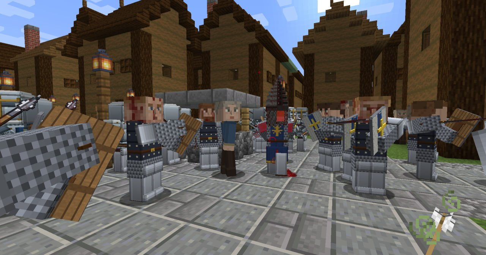
Recruit
Hire men in settlements. Each culture raises its own soldiers, with its own gear and fighting style.
Upgrade
Soldiers earn experience in battle. In the party screen (P), promote them along their troop tree: infantry, archers or cavalry.
Pay
Wages come due every week. Leave your men unpaid and some will desert.
Command
Order them with F6 follow, F7 hold and F8 charge. When they follow, they march with you across the map.
Troop trees
Each culture has its own tree. The number in brackets is the troop's level, and the grey name beside a mounted troop is its horse. Open the party screen (P) and click a troop to see its whole upgrade family.
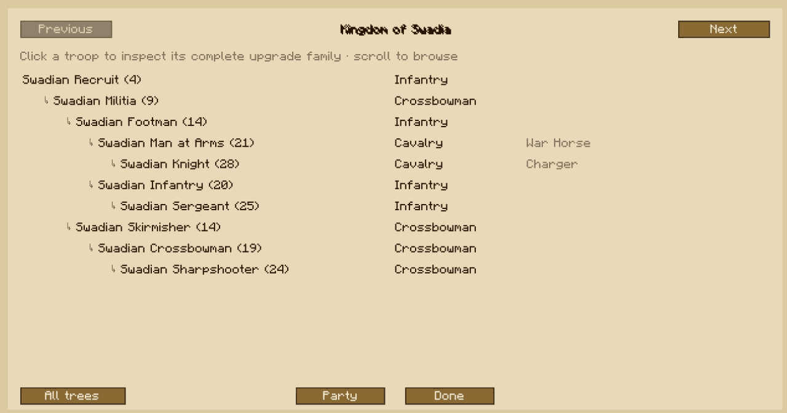
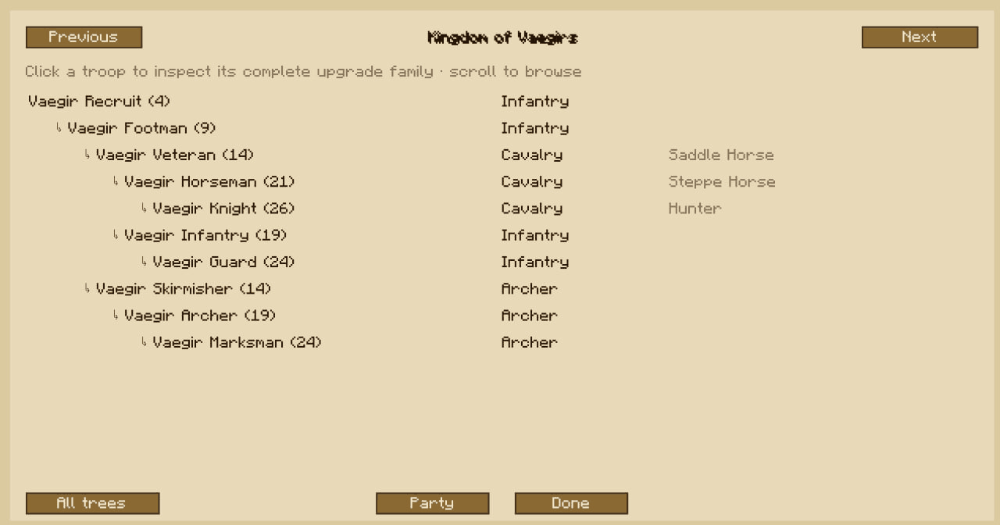
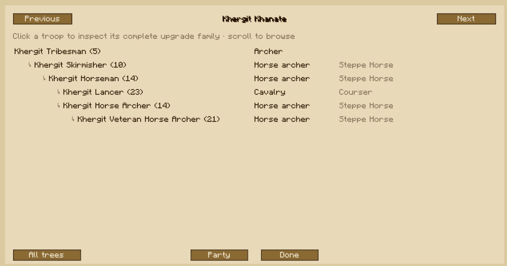
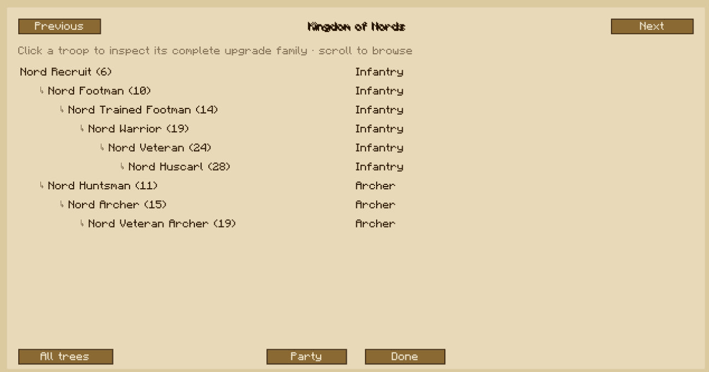
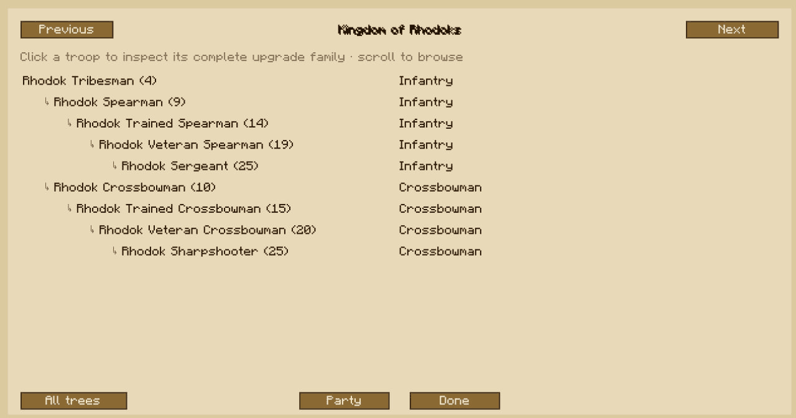
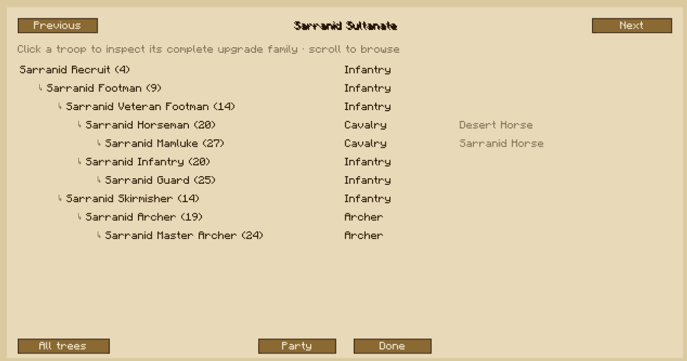
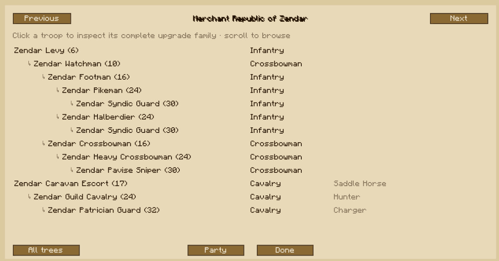
Companions
Sixteen heroes wander the taverns of Calradia, a week in each town. Talk to one, pay their fee and they join you. Companions are never killed in battle: they are wounded, fall back and recover.
- Train them. Talk to a companion from the party screen to spend their attribute, skill and weapon points as they level.
- Equip them from their own inventory: press E, then Party. See Companion inventories.
- Rename them, or, once you rule a kingdom with land to grant, make one a lord.
Companion inventories
Every companion carries their own gear and a pack of their own. Open it from your inventory and move things between you as you would with a chest.
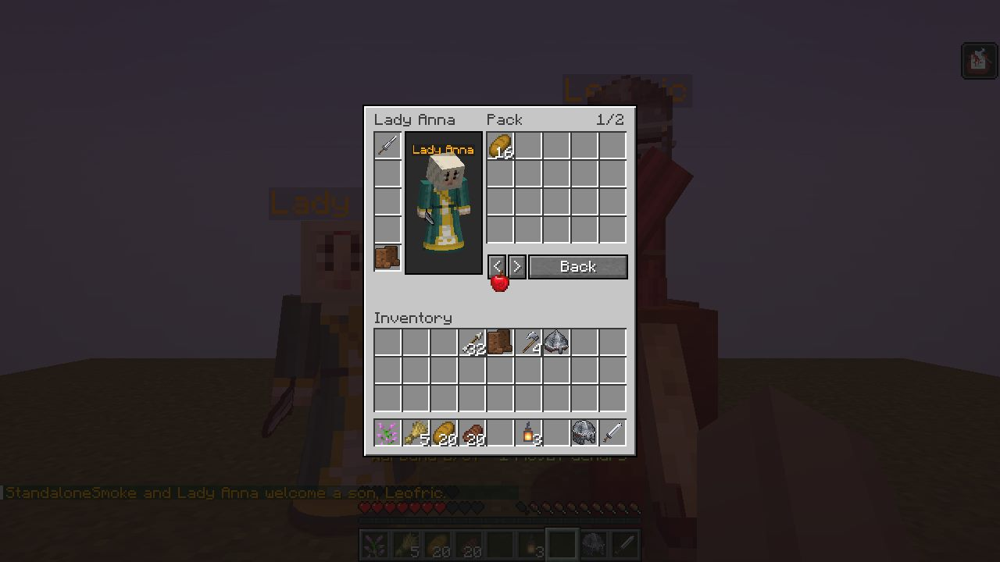
Opening it
- Press E to open your inventory.
- Click the Party button, beside the horse button above your inventory.
- The first companion's inventory opens. Use < and > to step to the next or previous one, and Back to return to your own inventory.
What it holds
| Weapon | The weapon in their hand |
| Shield | A shield or an offhand item |
| Helmet | Headgear |
| Body armour | Mail, plate, a gambeson or a robe |
| Boots | Footwear |
| Pack | 20 slots for anything else: food, arrows, spare gear, loot |
- Click an item to pick it up and click a slot to put it down. Shift-click moves it straight across: from you into their pack (or the matching empty equipment slot), or from them back to you.
- An equipment slot takes one matching Mount & Craft item. An apple is not a helmet, and the slot will refuse it.
- What you put in the weapon slot is what they fight with. Swapping a bow for a sword turns an archer into a swordsman.
Whose inventories
Everyone in your party you can manage: your spouse first, then your grown children and kin, then your hired companions by name. Ordinary soldiers keep the kit of their troop type.
In the saddle
Riding, E opens your horse's inventory instead of yours. It has the same Party button, to the right of the horse's panel, and your companions' packs open while they march with you.
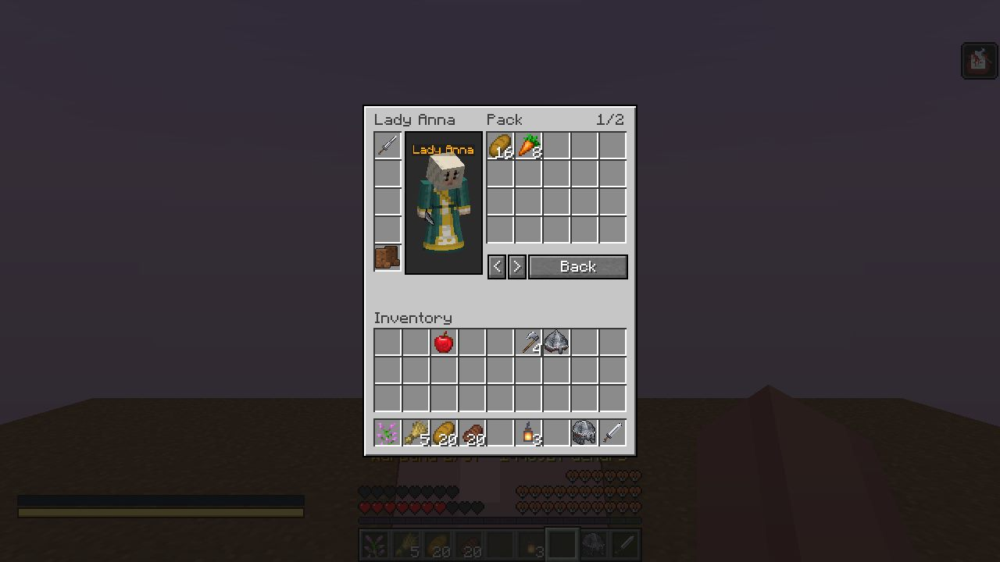
A pack travels with its owner: send your spouse or a son home and they keep everything they carried for the next time they ride with you.
Combat
Fighting is directional, as in Mount & Blade. Pick your blow (a swing from the left or right, an overhead or a thrust), and watch which side your enemy guards.
- Read the wind-up. Soldiers draw back before they strike, so you can see the blow coming and guard against it.
- Break a guard with a kick (G), then strike before they recover.
- Mounted. Charge with a lance and couch it at the gallop for a crushing hit, or cut down from the saddle with a sword.
- Missiles. Bows, crossbows and throwing weapons hit harder to the head.
Field battles
Meet a hostile party and a battle begins on its own field. Your men deploy beside you and reinforcements arrive in waves. Press O for battle options, including withdrawing. Beaten enemies can be taken prisoner; your fallen soldiers may be saved by a good surgeon.
The campaign
Calradia is alive without you: lords march, caravans trade, bandits raid and wars are declared and ended.
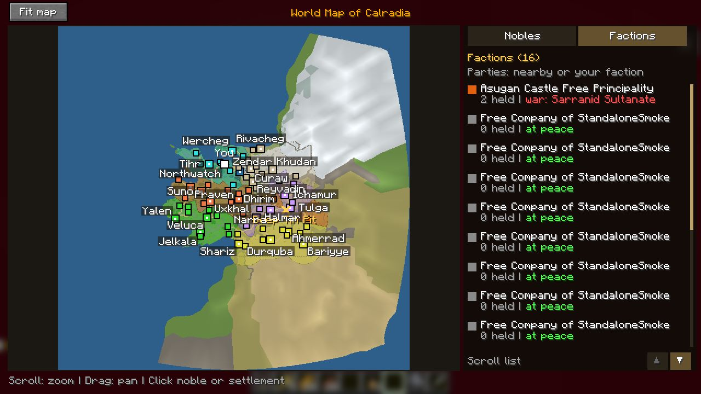
The calendar
The campaign keeps its own days, weeks and years. Wages, rents and family life follow it.
Caravans
Merchants travel between towns, by sea where the coast allows. Escort them, or raid them and make enemies.
Mines
Mines are marked on your map: mineshafts to explore, with loot below and sometimes a bandit hideout.
Villages
Villages feed their towns. Raid one and you choose: take what you can, or raze it.
Tournaments
Town arenas hold tournaments with blunted weapons. Win for gold and renown.
The minimap
Press V for the people and places near you, or F10 for the detailed map.
Kingdoms and fiefs
Six kingdoms hold the map: Swadia, the Vaegirs, the Khergit Khanate, the Nords, the Rhodoks and the Sarranid Sultanate. Serve one, or found your own.
Rising in the world
- Swear an oath to a lord and serve his kingdom. Loyal vassals are granted fiefs: castles, towns and villages.
- Found a kingdom. Hold land of your own and you can proclaim a realm, persuade lords to join you, and choose how it is governed.
- Clans. From level 10, found a clan with
/warband clan create <name>, invite players, name its ranks and set its banner. The leader decides which kingdom the clan follows. - Jobs.
/warband joblists the offices: captain, guard, builder, farmer, trader and miner. Each one does something real.
Running your fiefs
- Prosperity, rent and taxes. A fief's menu shows its wealth. Prosperous places pay you more.
- Garrison and development. Station troops to defend it and invest in its development.
- Unrest. A people of another culture or faith grows restless under a foreign lord. Left alone, unrest becomes an uprising, and the rebels lay siege.
- Governors. Set a grown son or daughter over a fief. See Governors.
- Rename it. A fief you hold has a Rename line in its menu. The new name shows on the world map, the minimap, its floating name and its signs.
Governors
A fief runs better with one of your own blood in charge. Set a grown son or daughter, or after a succession a brother or sister, over a castle, town or village you hold, and it gains every day they govern.
Appointing a governor
- Hold the fief yourself. Only fiefs held in your own name can be given a governor.
- Have someone of age. A son, daughter, brother or sister of 18 or more, who is not riding with you. Send them home first if they are in your party.
- Open the family screen and choose "Make your son ... governor of ...".
One governor to a fief, and one fief to a governor. The fief's menu names its governor and shows what they bring.
What a governor does, each day
| Prosperity | +1 a day, and +1 more for a governor gifted in Intelligence |
| Rent | +10% to what the fief pays you, and +5% for each point of Charisma talent |
| Unrest | Grows 2 less a day, or 4 less when the governor is of the people's own culture |
When it ends
- Recall them from the family screen and they come home. A governor cannot ride with you until recalled.
- Lose the fief, by siege, by grant or by giving it up, and the governorship ends.
- At a succession, an heir who governed becomes the head of the house, and that post ends. The rest of the family keep theirs.
Sieges
Walls do not fall to a charge. A siege is a campaign of its own.
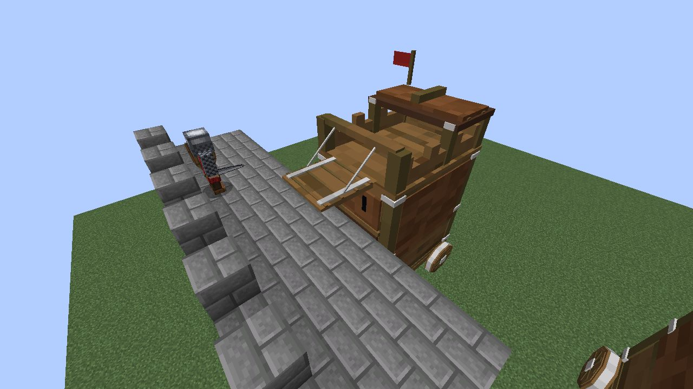
- Make camp before the walls and cut the town off.
- Get your engines. Siege engineers in towns and castles sell and build trebuchets, catapults, battering rams and siege towers. Your infantry build them on site.
- Batter the gate. Gates are strong, and show a health bar as they weaken.
- Assault. Climb the ladders, roll a tower up to the battlements, or break the gate and storm in.
Marriage and family
A house outlives its founder. Marry, raise children and choose who carries your name.
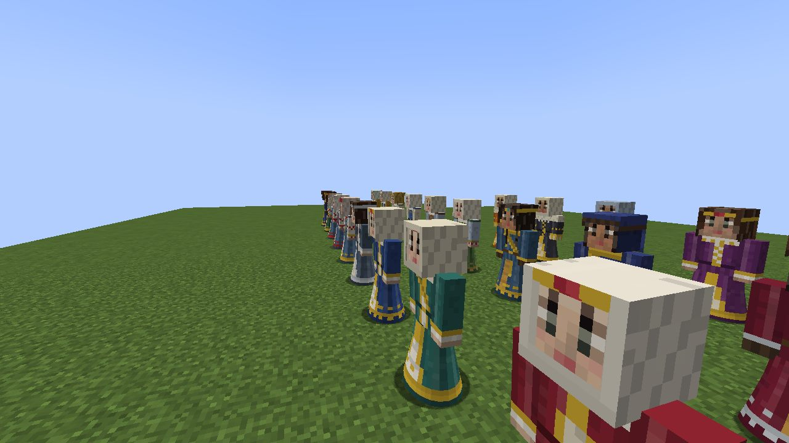
- Courtship. Visit a lord's hall and speak with an eligible lady or young lord. Win them over through conversation, poetry and tournament victories, then agree terms with their household.
- Children. A household year passes in twelve campaign days. Children take after either parent's culture and faith, and come of age at eighteen.
- Your spouse at your side. Ask your spouse to join your party at their home hall. They fight, train and are equipped like a companion.
- Grown children. Sons and daughters of age can ride with you as companions (with their own inventories), or govern your fiefs.
- Succession. Old age comes for everyone. When you die, you play on as an adult son or daughter, a brother or sister, or your widowed spouse.
Faith and culture
Every person, town and realm has a culture and a faith, and they matter.
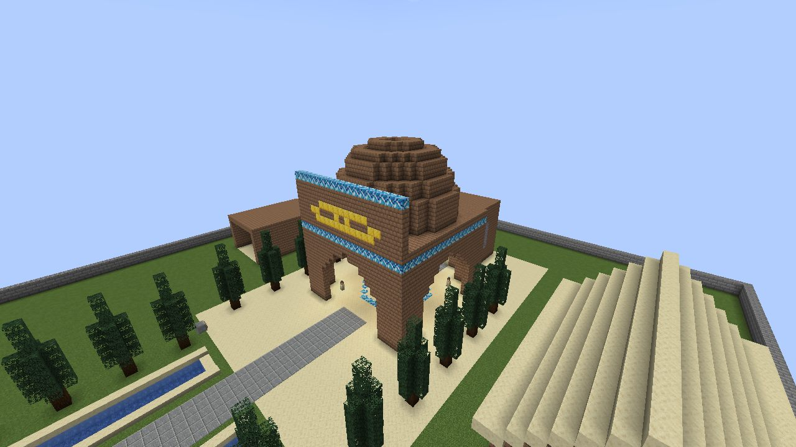
- Temples. Pray and give gifts at your faith's places of worship.
- Conversion. You can change your faith at a temple. Persuade nobles to yours, or have a realm adopt a state religion by decree or by vote.
- Unrest. Ruling a people of another faith or culture breeds unrest; good administration, a garrison and a governor of their own culture all help.
- The Darshi. A Persian-inspired people with their own troop tree and battlefield doctrine, and the Zoroastrian faith.
Land and building
Press K for land and building. Claim land, found a village of your own, and put workers to building from blueprints. Lay roads and bridges to link your holdings. A village counts as land, so it helps you proclaim a kingdom.
At sea
With the Small Ships mod installed alongside Mount & Craft, Calradia's coasts come alive: coastal towns have shipyards where ships are built and sold, lords and caravans sail between ports, and raiders strike at sea.
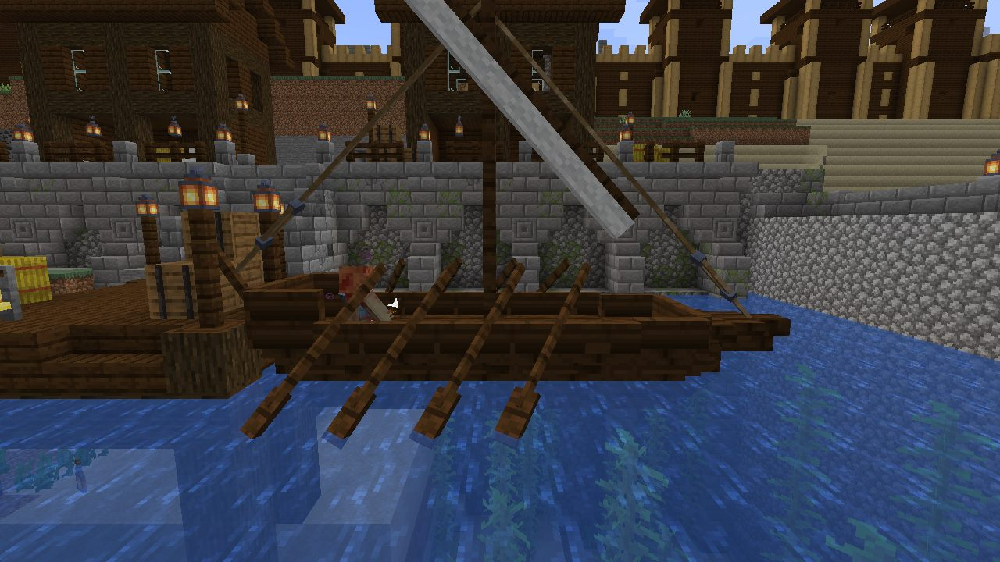
Small Ships is a separate mod and is not included in the modpack. Install it yourself if you want the naval side of the game.
Getting help
Stuck, or found a bug? Check the wiki, ask in our Discord (the Join Discord button on the home page), or read the in-game guide with N. Keep the modpack up to date in your launcher, or the server will turn you away.